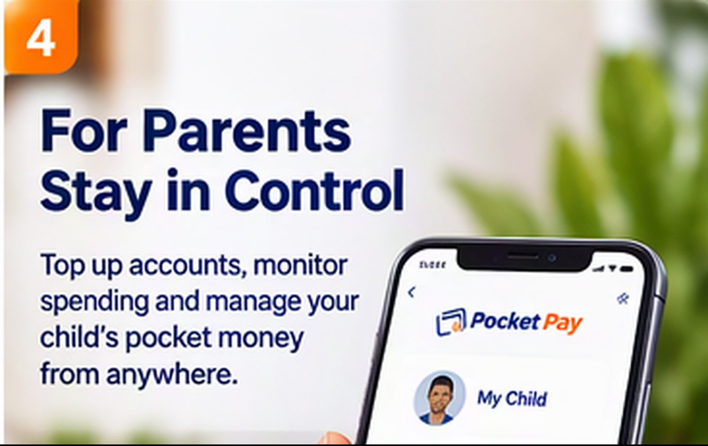
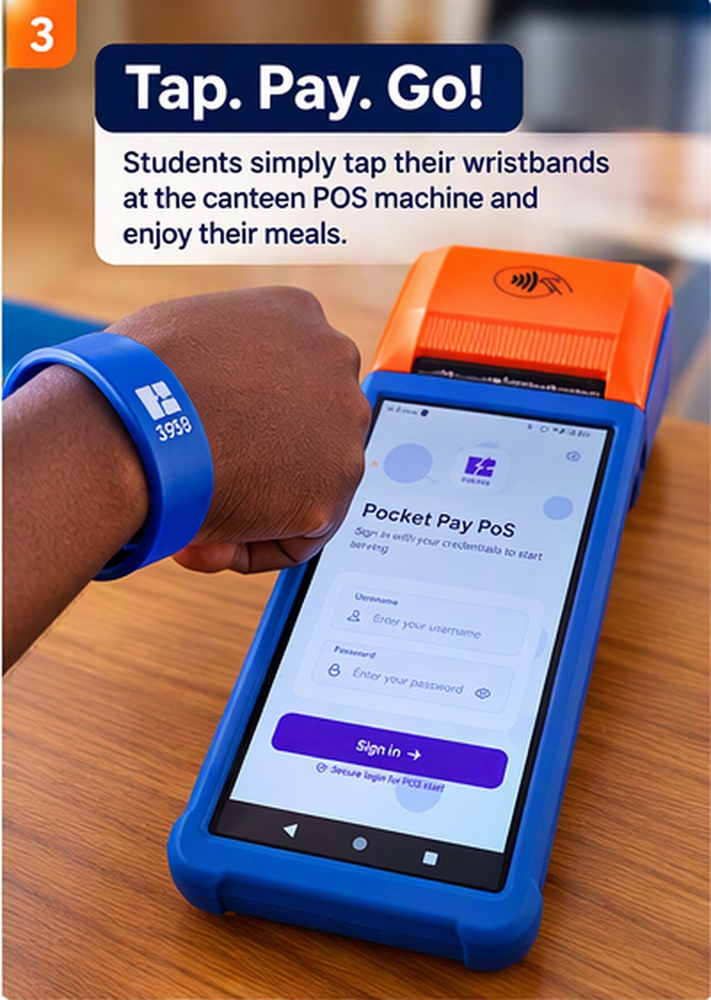
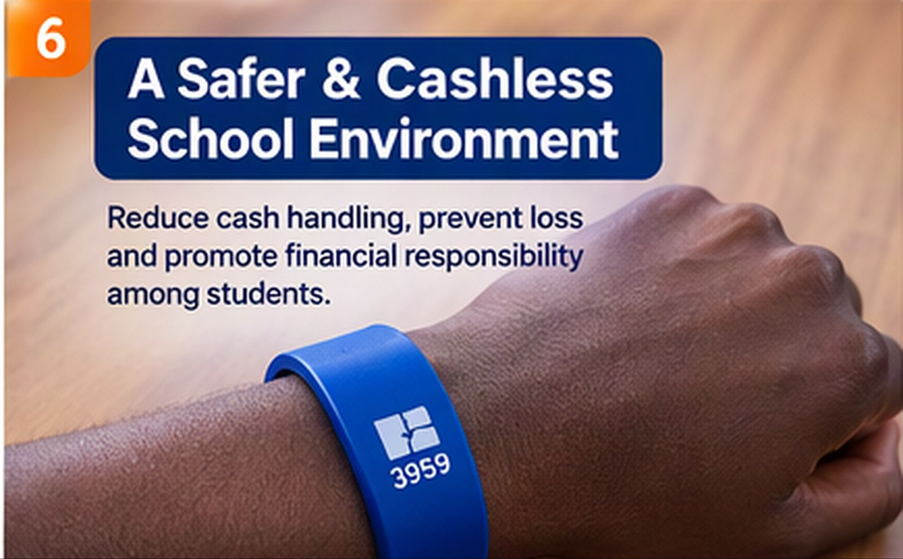
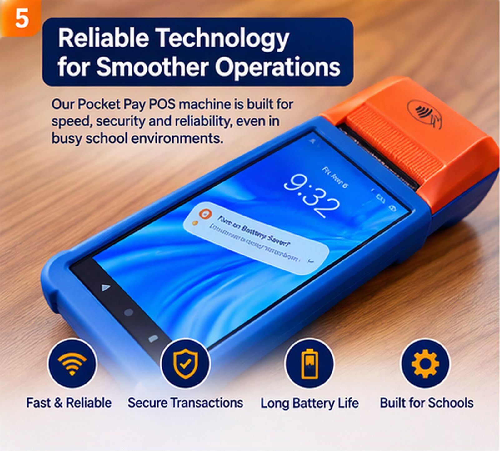
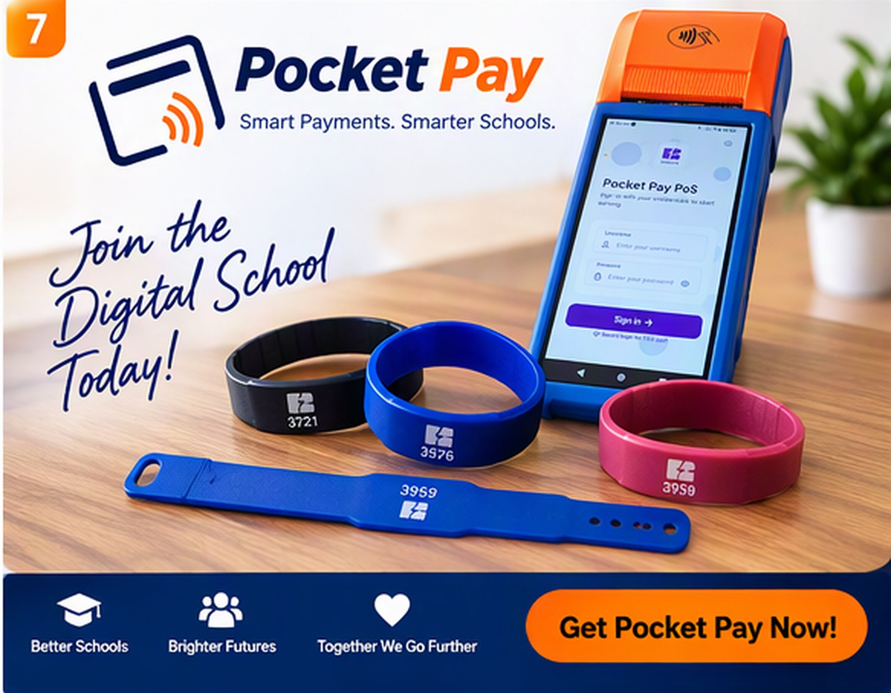

Parent tops up
Funds are added to a learner account.
Pocket Pay by Sobola Finance Ltd helps parents, students, schools and canteens manage everyday school payments without relying heavily on physical cash. It is a digital pocket-money and student account solution for participating schools in Uganda.
Sign-in and live account data are not yet connected.

Funds are added to a learner account.
Approved funds become available.
A purchase is made at a participating point.
The transaction is recorded for review.

Parents can top up and review learner activity.

Students can use approved funds without carrying cash.

Monitor relevant transactions.

Receive digital payments.
Pocket Pay is Sobola Finance's digital school payment system for student accounts and everyday purchases at participating school points, such as a canteen. Parents can top up an account and review its activity; learners can pay with a Pocket Pay wristband at supported point-of-sale terminals. It can act as a digital school wallet for school pocket money and purchases, not as a school-fees collection service advertised here.
A parent can add funds to a learner's Pocket Pay account through the school's configured process. Top-up methods, including whether mobile money is available, depend on the school's setup. Check with your school or Sobola support before sending money; the website does not list a universal mobile money payment method.
Pocket Pay is designed to let parents check a learner's balance, review transaction history, and set spending limits. Schools can confirm which account controls, notifications, and parent dashboard features are enabled for their implementation.
A learner taps a Pocket Pay wristband at a participating canteen point-of-sale terminal. The published product information does not specify whether a particular wristband uses RFID or NFC, or whether it works as a school ID. Schools comparing contactless or RFID wristband payment systems should confirm the hardware, compatibility, and replacement process with Sobola before purchase.
Pocket Pay is designed for school purchases, including canteen payments. Whether a particular primary, secondary, boarding, or day school can use it depends on its onboarding, accounts, and participating payment points. Schools can contact Sobola to discuss their needs and request a product demonstration.
Pocket Pay can reduce the need for cash for purchases made at participating school points. It does not mean every school payment is cashless, and a school decides which purchases and canteen points accept digital payments.
Pocket Pay provides school and canteen tools for viewing relevant student activity, transaction histories, and reports. Canteen teams can reconcile transactions in the product. Specific reporting, reconciliation, and inventory workflows depend on the school's setup.
Digital student accounts and transaction records can help schools and parents review purchases and reduce the cash students carry. No payment system can promise to prevent every loss or fraud. Ask the school how to report a lost wristband and disable the associated account.
Sobola Finance does not publish Pocket Pay pricing on this website. Ugandan schools can contact the team to discuss availability, a demonstration, a school-specific quote, payment methods, and partnership options. Pocket Pay customer support is available through the contact details on this site.
Schools can start by discussing their canteen points, student accounts, parent top-ups, payment methods, and reporting needs with Sobola Finance. Pocket Pay supports a gradual move toward cashless payments for participating purchases; a school decides how and when to introduce it.
Give your school community a simple way to make and manage everyday cashless payments.
Login to Top-Up